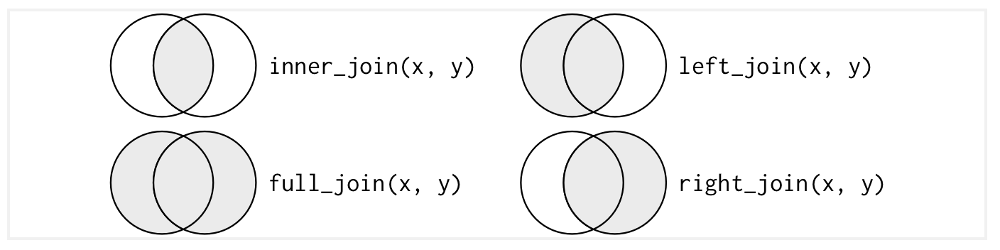

Section 4. Introduction to dplyr
Introduction to dplyr
dplyr is a package within the tidyverse that is used for processing and cleaning data.
Subsetting Rows: filter()
Much like the [] and $ operators, discussed above, we often want to analyze certain parts of our data. dplyr has a helpful command, filter(), which we can use to subset our data. filter() takes logical conditions as its arguments. We can use it to get only Republican candidates in our house data:
house %>%
filter(party=="REP")# A tibble: 348 × 8
party state district incumbent_challenge_full receipts disbursements last
<chr> <chr> <dbl> <chr> <dbl> <dbl> <chr>
1 REP AL 1 Open seat 2344517. 2232544. CARL
2 REP AL 5 Incumbent 669026. 223707. BROOKS
3 REP AR 1 Incumbent 966801. 1095518. CRAWFORD
4 REP CA 3 Challenger 397099. 384584. HAMILTON
5 REP CA 6 Challenger 45504. 45286. BISH
6 REP CA 7 Challenger 81732. 67330. PATTERS…
7 REP CA 8 Open seat 2028339. 1958786. OBERNOL…
8 REP CA 9 Challenger 52225 52225 AMADOR
9 REP CA 13 Challenger 9879. 9944. PITERMAN
10 REP CA 11 Open seat 186079. 182995. SHARMA
# ℹ 338 more rows
# ℹ 1 more variable: voteshare <dbl>We can use it to get Republicans who received more than 50% of the vote in Texas:
house %>%
filter(party=="REP"&voteshare>50&state=="TX")# A tibble: 21 × 8
party state district incumbent_challenge_full receipts disbursements last
<chr> <chr> <dbl> <chr> <dbl> <dbl> <chr>
1 REP TX 4 Challenger 257176. 95068. FALLON
2 REP TX 11 Open seat 2598806. 2004400. PFLUGER
3 REP TX 13 Open seat 2151194. 1764055. JACKSON
4 REP TX 22 Open seat 1818077. 1798160. NEHLS
5 REP TX 23 Open seat 2882972. 2851613. GONZALES
6 REP TX 17 Open seat 1485909. 1696588. SESSIONS
7 REP TX 25 Incumbent 2446005. 3358151. WILLIAMS
8 REP TX 26 Incumbent 1827226. 2102030. BURGESS
9 REP TX 31 Incumbent 2168868. 2223167. CARTER
10 REP TX 1 Incumbent 564861. 592388. GOHMERT
# ℹ 11 more rows
# ℹ 1 more variable: voteshare <dbl>Often, we want to store these subsets for later analysis, so we can create a new variable. For our Republican subset, we could run the following code:
rep <- house %>%
filter(party=="REP")Subsetting Columns: select()
We want to focus our analysis on specific columns. Again, like the [] or $ operators above, dplyr has a helpful command to do this: the select() command. select() takes column names as its arguments.
Say we want to focus only on incumbency status and voteshare in our house data, we can run the following code to get just these columns:
house %>%
select(incumbent_challenge_full, voteshare)# A tibble: 726 × 2
incumbent_challenge_full voteshare
<chr> <dbl>
1 Open seat 64.4
2 Open seat 35.5
3 Open seat 34.7
4 Incumbent 95.8
5 Incumbent 97.2
6 Incumbent 100
7 Incumbent 56.6
8 Challenger 45.3
9 Challenger 44.1
10 Challenger 26.7
# ℹ 716 more rowsRenaming variables: rename()
Variables don’t always come with helpful names, so it’s often helpful to rename columns to something more useful. The rename() function takes an argument of the form "new_name" = "old_name". If we want to rename multiple columns, we put the sequence of arguments like "new_name" = "old_name" into a vector.
In our house data, we can rename the incumbent_challenge_full variable incumbent and the disbursements variable to spending instead.
house %>%
rename(c("incumbent" = "incumbent_challenge_full",
"spending" = "disbursements"))# A tibble: 726 × 8
party state district incumbent receipts spending last voteshare
<chr> <chr> <dbl> <chr> <dbl> <dbl> <chr> <dbl>
1 REP AL 1 Open seat 2344517. 2232544. CARL 64.4
2 DEM AL 1 Open seat 80095. 78973. AVERHART 35.5
3 DEM AL 2 Open seat 57723. 57661. HARVEY-HALL 34.7
4 REP AL 5 Incumbent 669026. 223707. BROOKS 95.8
5 DEM AL 7 Incumbent 2171040. 1498832. SEWELL 97.2
6 REP AR 1 Incumbent 966801. 1095518. CRAWFORD 100
7 DEM CA 7 Incumbent 1830741. 1126436. BERA 56.6
8 REP CA 3 Challenger 397099. 384584. HAMILTON 45.3
9 DEM CA 4 Challenger 3022017. 3018529. KENNEDY 44.1
10 REP CA 6 Challenger 45504. 45286. BISH 26.7
# ℹ 716 more rowsChanging and Creating Variables: mutate()
Sometimes we have to create new variables or modify old variables to put them into a useful form. For example, we might want to change one of our variables into a factor variable with levels in a specific order. Or, we might want to change the labels of our factor. Or, we might want to create a new variable.
We can change the order of our incumbent variable to “Incumbents”, “Challengers”, and then “Open-Seat Candidates”:
house %>%
mutate(incumbent_challenge_full = factor(incumbent_challenge_full,
levels = c("Incumbent", "Challenger", "Open seat")))# A tibble: 726 × 8
party state district incumbent_challenge_full receipts disbursements last
<chr> <chr> <dbl> <fct> <dbl> <dbl> <chr>
1 REP AL 1 Open seat 2344517. 2232544. CARL
2 DEM AL 1 Open seat 80095. 78973. AVERHART
3 DEM AL 2 Open seat 57723. 57661. HARVEY-…
4 REP AL 5 Incumbent 669026. 223707. BROOKS
5 DEM AL 7 Incumbent 2171040. 1498832. SEWELL
6 REP AR 1 Incumbent 966801. 1095518. CRAWFORD
7 DEM CA 7 Incumbent 1830741. 1126436. BERA
8 REP CA 3 Challenger 397099. 384584. HAMILTON
9 DEM CA 4 Challenger 3022017. 3018529. KENNEDY
10 REP CA 6 Challenger 45504. 45286. BISH
# ℹ 716 more rows
# ℹ 1 more variable: voteshare <dbl>We can also change the labels of our party variable:
house %>%
mutate(party = factor(party, labels = c("Democrat", "Republican")))# A tibble: 726 × 8
party state district incumbent_challenge_…¹ receipts disbursements last
<fct> <chr> <dbl> <chr> <dbl> <dbl> <chr>
1 Republican AL 1 Open seat 2344517. 2232544. CARL
2 Democrat AL 1 Open seat 80095. 78973. AVER…
3 Democrat AL 2 Open seat 57723. 57661. HARV…
4 Republican AL 5 Incumbent 669026. 223707. BROO…
5 Democrat AL 7 Incumbent 2171040. 1498832. SEWE…
6 Republican AR 1 Incumbent 966801. 1095518. CRAW…
7 Democrat CA 7 Incumbent 1830741. 1126436. BERA
8 Republican CA 3 Challenger 397099. 384584. HAMI…
9 Democrat CA 4 Challenger 3022017. 3018529. KENN…
10 Republican CA 6 Challenger 45504. 45286. BISH
# ℹ 716 more rows
# ℹ abbreviated name: ¹incumbent_challenge_full
# ℹ 1 more variable: voteshare <dbl>Conditional logic in data processing: ifelse() and case_when()
If we want to create a new variable that takes on certain values only when certain conditions are met or to alter our variable only when certain conditions are met, we need the logical conditions we talked about in the last section.
R and dplyr have special functions that let us use logical conditions.
ifelse(condition, true value, false value) returns the “true value” if the condition is TRUE and the “false condition” if the condition is FALSE. For example,
ifelse(2<3, "true", "false")[1] "true"ifelse(2>3, "true", "false")[1] "false"Say we want to create a dummy or indicator variable for whether a candidate in our house dataset is a Democrat or not:
house %>%
mutate(democrat = ifelse(party=="DEM", 1, 0))# A tibble: 726 × 9
party state district incumbent_challenge_full receipts disbursements last
<chr> <chr> <dbl> <chr> <dbl> <dbl> <chr>
1 REP AL 1 Open seat 2344517. 2232544. CARL
2 DEM AL 1 Open seat 80095. 78973. AVERHART
3 DEM AL 2 Open seat 57723. 57661. HARVEY-…
4 REP AL 5 Incumbent 669026. 223707. BROOKS
5 DEM AL 7 Incumbent 2171040. 1498832. SEWELL
6 REP AR 1 Incumbent 966801. 1095518. CRAWFORD
7 DEM CA 7 Incumbent 1830741. 1126436. BERA
8 REP CA 3 Challenger 397099. 384584. HAMILTON
9 DEM CA 4 Challenger 3022017. 3018529. KENNEDY
10 REP CA 6 Challenger 45504. 45286. BISH
# ℹ 716 more rows
# ℹ 2 more variables: voteshare <dbl>, democrat <dbl>The problem is that, sometimes, we want to check more than one condition and create or modify variables based off of these multiple conditions. An example of this might be we want to create a categorical variable that combines information about both voteshare and party (we want a variable that tells us whether the candidate is a Democratic winner or loser or a Republican winner or loser).
We can use case_when() for this task. We use case_when() as follows: case_when(condition1~output1, condition2~output2, condition3~output3, ..., T~outputLast). If condition1 is TRUE, the function will return output1, and so on… We include the T~outputLast statement to indicate what the function should return if none of our conditions are TRUE.
To create the party winner status variable from above, we can use the following code:
house %>%
mutate(party_winner = case_when(party=="DEM"&voteshare>=50~"Dem. Winner",
party=="DEM"&voteshare<50~"Dem. Loser",
party=="REP"&voteshare>=50~"Rep. Winner",
T~"Rep. Loser"))# A tibble: 726 × 9
party state district incumbent_challenge_full receipts disbursements last
<chr> <chr> <dbl> <chr> <dbl> <dbl> <chr>
1 REP AL 1 Open seat 2344517. 2232544. CARL
2 DEM AL 1 Open seat 80095. 78973. AVERHART
3 DEM AL 2 Open seat 57723. 57661. HARVEY-…
4 REP AL 5 Incumbent 669026. 223707. BROOKS
5 DEM AL 7 Incumbent 2171040. 1498832. SEWELL
6 REP AR 1 Incumbent 966801. 1095518. CRAWFORD
7 DEM CA 7 Incumbent 1830741. 1126436. BERA
8 REP CA 3 Challenger 397099. 384584. HAMILTON
9 DEM CA 4 Challenger 3022017. 3018529. KENNEDY
10 REP CA 6 Challenger 45504. 45286. BISH
# ℹ 716 more rows
# ℹ 2 more variables: voteshare <dbl>, party_winner <chr>Note: if we want to save the variables we create, we need to assign the output of the pipe operations above to the house variable.
house <- house %>%
mutate(party_winner = case_when(party=="DEM"&voteshare>=50~"Dem. Winner",
party=="DEM"&voteshare<50~"Dem. Loser",
party=="REP"&voteshare>=50~"Rep. Winner",
T~"Rep. Loser"))Summarizing data: summarize()
dplyr also gives us a nice function to summarize our data (remember the summary statistics we discussed last week). The summarize() function works similarly to the mutate() function: it creates variables. But unlike the mutate() function, it calculates numbers by combining all the data in a given column. For example, we can use summarize to find the averages of our columns.
Let’s find the average, minimum, and maximum amounts of spending and receipts in our house dataset.
house %>%
summarize(avg_spending = mean(disbursements),
min_spending = min(disbursements),
max_spending = max(disbursements),
avg_receipts = mean(receipts),
min_receipts = min(receipts),
max_receipts = max(receipts))# A tibble: 1 × 6
avg_spending min_spending max_spending avg_receipts min_receipts max_receipts
<dbl> <dbl> <dbl> <dbl> <dbl> <dbl>
1 1932281. 1142. 33728421. 2141027. 3065. 38160642.Grouping data for analysis: group_by()
Many times, we want to get these summary statistics within specific groups in our dataset. We can do this by combining the summarize() function with the group_by() function. The group_by() function takes the variable(s) we want to group by as its arguments.
If we want to calculate the average amount of money raised, grouped by our party-winner variable we created earlier, we can do this using this code:
house %>%
group_by(party_winner) %>%
summarize(avg_receipts = mean(receipts))# A tibble: 4 × 2
party_winner avg_receipts
<chr> <dbl>
1 Dem. Loser 1760934.
2 Dem. Winner 2680123.
3 Rep. Loser 1176955.
4 Rep. Winner 2786996.Joining multiple datasets
Our data do not always come neatly packaged within a single .csv file. How do we get our data into a form we can use for analysis? We have to use some form of joining function to merge our data together.
There are a few different types of joins that we regularly use in R. We can see examples below in the graphic taken from Wickham and Grolemund (Ch. 13).

Another function anti_join(x, y) gives us the observations in x which are not found in y. This can be helpful for checking our merges.
We need at least one key variable that matches between the two datasets. This key variable must be present in both datasets, and it must match exactly between the two datasets. We can use more than one key if we need (e.g., first name and last name).
This can be a challenging process. Much of the time keys do not match exactly between datasets: there might be different spellings, different spacing, different punctuation, different capitalization, etc. All of these differences can cause issues with merging, so it is important to be careful when merging. Merging is often an iterative process. We try merging, find mistakes, correct mistakes, and try again.